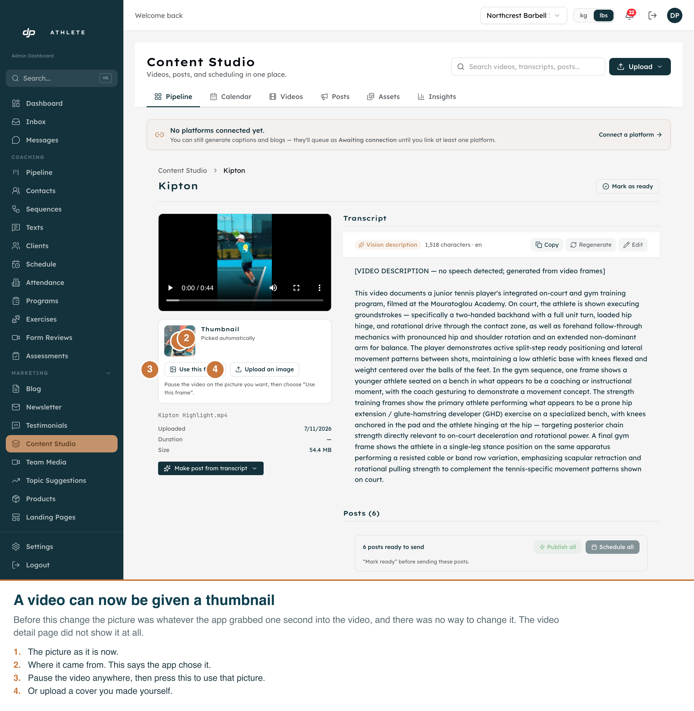
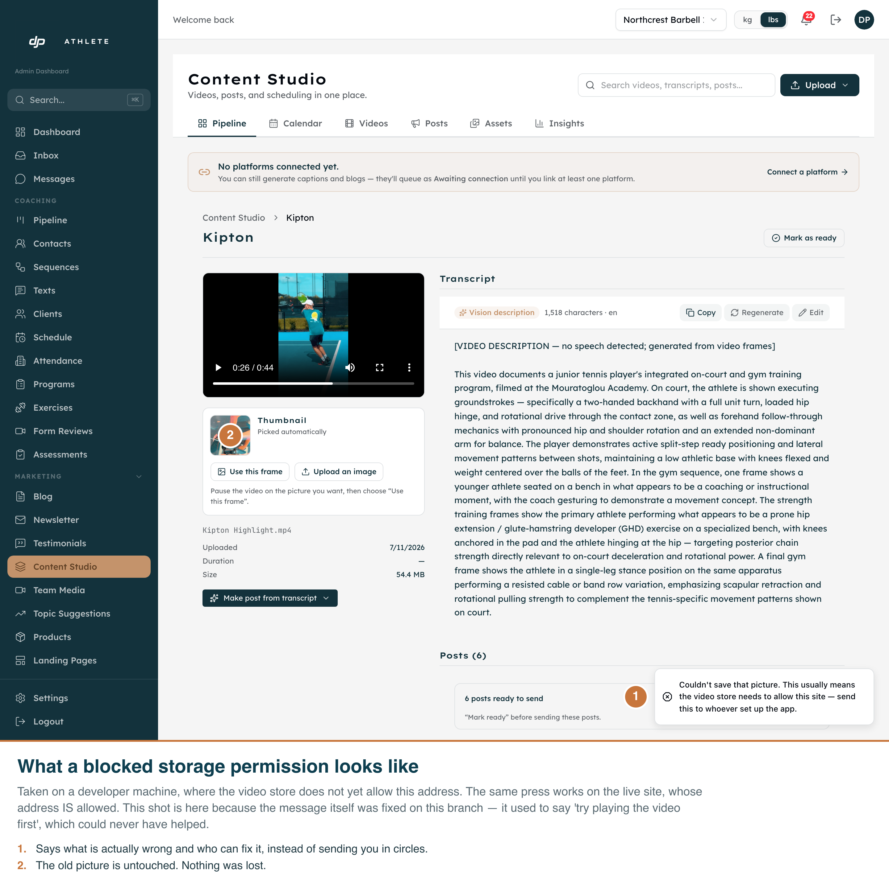
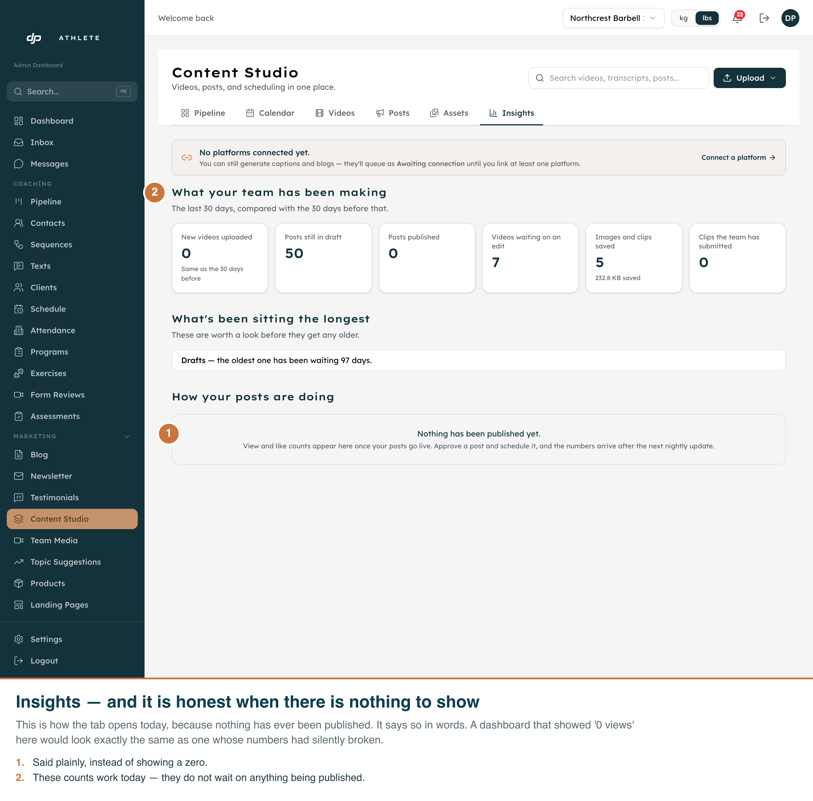
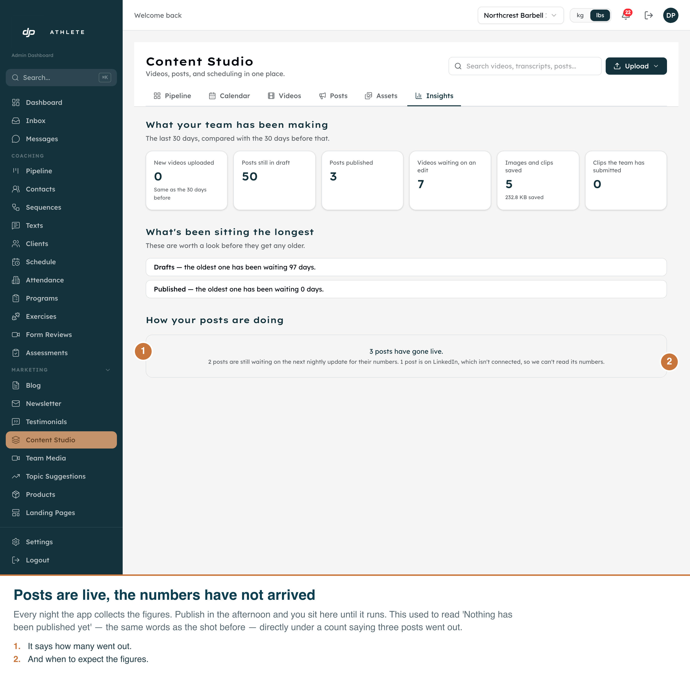
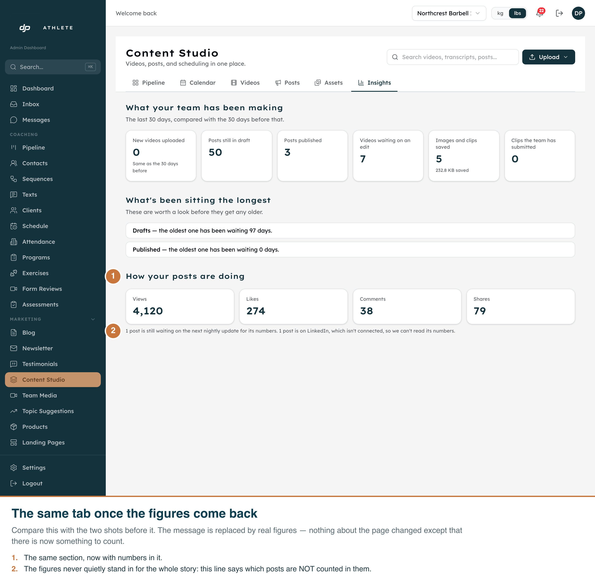
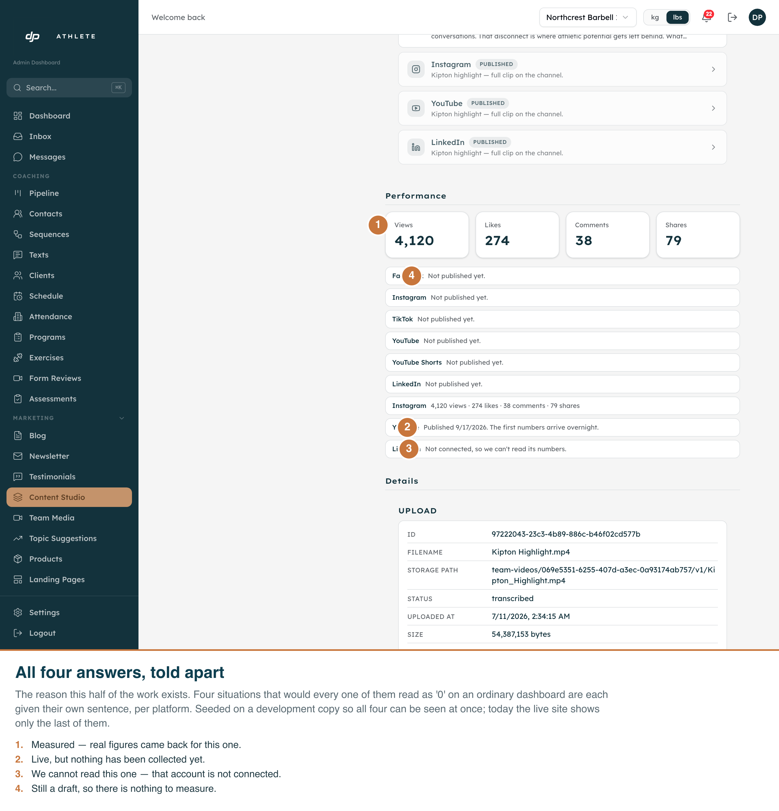

A thumbnail you can choose, and metrics that do not lie when empty
Darren asked for “the ability to put a thumbnail on the video creation stuff as well as some
basic metrics of analysis”, on the media management side. Every shot below is the real admin on
its real route, driven with Playwright against the development copy of the database. The
annotations are burned into each PNG, so the file explains itself on its own.
Read this one first. Shot 02 is a failure, on purpose. One of the two ways to set a
thumbnail — picking a frame out of the video — cannot be exercised from a developer
machine, because the video store only allows the live web address. It is expected to work on the
live site and is not provable here. The other way, uploading your own picture, has the same
constraint locally. See What is not proven at the bottom.
01 — The picker, on the real video page
/admin/content/<video> · Chromium 1440×1200 @2×.
Before this work the picture was whatever the app grabbed one second in, there was no way to
change it, and the detail page did not show it at all.

02 — What a blocked storage permission looks like
The same page after pressing “Use this frame” on a developer machine.
This message is itself part of the work: the first version said “try playing the video
first”, which could never have helped, because the cause is a permission rather than
anything the person did.

03 — Insights, exactly as it opens today
/admin/content?tab=insights · nothing has ever been published, so the
lower half says so in words.

- The counts above the line work today and do not wait on anything being published.
- “Drafts — the oldest one has been waiting 97 days” is the number that
actually prompts action, and it is real.
- A dashboard that printed “0 views” here would look identical to one whose
numbers had silently stopped arriving. That is the thing this design refuses to do.
04 — Posts are live, the numbers have not arrived
The same tab with three posts published and no figures collected against them yet —
where a coach sits for the rest of the day after an afternoon publish.
Seeded on the development copy and deleted again immediately afterwards.

- This shot is here because the tab used to get it wrong. Until the final
review it printed “Nothing has been published yet” here — word for word
the sentence in shot 03 — while the band directly above it counted
“Posts published — 3”. One screen, two contradictory claims.
- A post on a platform that is not connected read that way permanently, not just overnight.
- Compare the lower panel with shot 03: same route, same code, and the two situations are
now told apart in words.
05 — The same tab once the figures come back
Identical route and code; the only difference is that there is now something to count.
Seeded on the development copy and deleted again immediately afterwards.

- The line under the figures survives into this state on purpose: 4,120 views is the total
for the posts that could be measured, and the sentence beneath says which ones
are missing from it.
06 — Four answers, told apart
The Performance section on a single video. This is the reason the second half of the work
exists.

- Measured — figures came back.
- Published, no numbers yet — live, but nothing collected.
- Not connected — we cannot read that account.
- Not published yet — still a draft.
All four would read as 0 on an ordinary dashboard. Today the live site shows only
the last of them, on every video.
What is not proven here, and why.
- Setting a thumbnail could not be completed from a developer machine. The
video store’s permission list contains the live web address and not
localhost — measured directly, not assumed. Both buttons are therefore
expected to work on the live site and neither can be demonstrated here. Adding the
development address to that list is a one-off setting.
- Shot 05 and shot 06 used seeded rows on the development copy, because
nothing has ever genuinely been published. Three posts and one set of figures were inserted
directly and deleted afterwards. Nothing was sent to Instagram, YouTube or LinkedIn —
the publishing path was never invoked.
- Image-set submissions are not shown in shot 03. Every submission in both
the development and live databases is a video; there has never been an image set, so that
branch has no real example to photograph.
Captured by scripts/capture-media-thumbnails-and-insights.ts, which refuses to start
unless it is pointed at the development database.